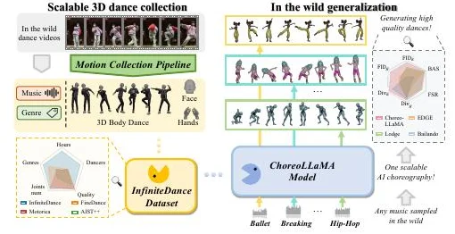
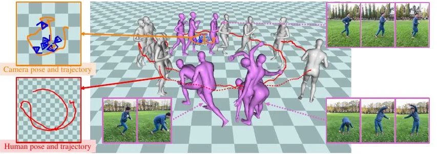
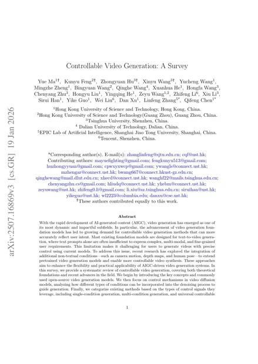
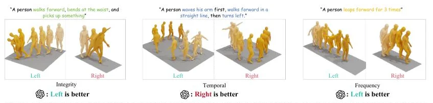

Tsinghua University
Sep 2025 – PresentPh.D. in Control Science and Engineering
Advisor: Prof. Xiu Li
Research interests & opportunities
I am a Ph.D. student in Control Science and Engineering at Tsinghua University, advised by Prof. Xiu Li. Before that, I received my B.Eng. in Computer Science and Technology from Chongqing University, where I ranked first in my class (1/323). My research interests include 3D human motion generation, camera trajectory generation, controllable video generation, and multimodal learning.
Previously, I was a Research Intern at Tencent Games, working on joint human-camera reconstruction.
Open to research collaborations and internship opportunities.
Feel free to get in touch to discuss human motion, camera control, and visual generation.
Selected work
From expressive human motion to controllable cameras and video.
* Equal contribution. My name is underlined. More on Google Scholar.
ECCV 2026, accepted

ACM MM 2026, accepted
Accepted

ACM Computing Surveys, under review

CVPR 2025

Journey
Ph.D. in Control Science and Engineering
Advisor: Prof. Xiu Li
B.Eng. in Computer Science and Technology
GPA: 3.91/4.00 · Rank: 1/323
Research Intern, Shenzhen
Human motion capture, pose estimation,
and camera estimation